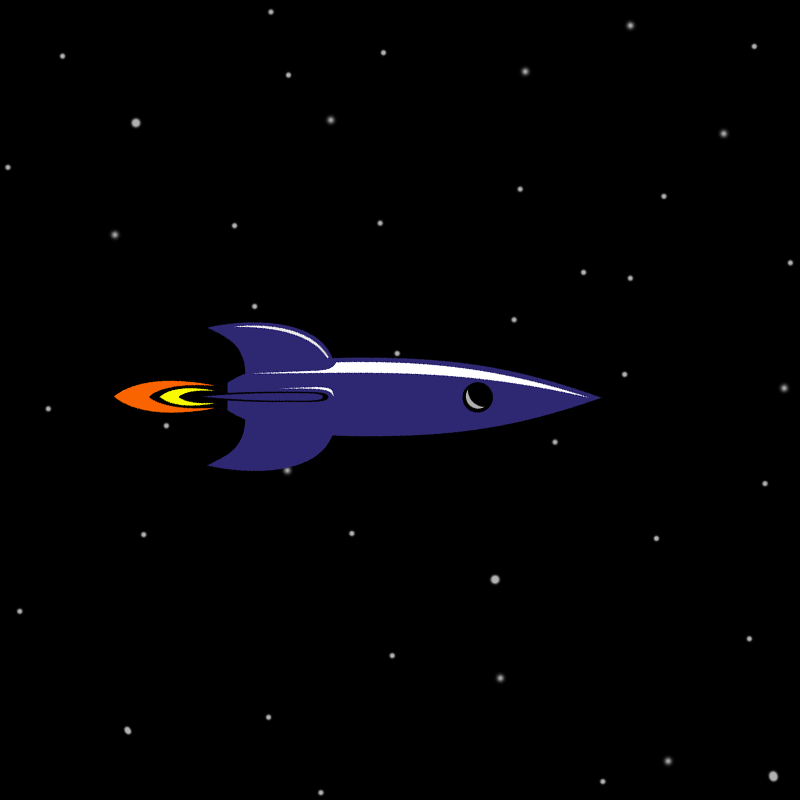

Solar System
The Solar System is the gravitationally bound system of the Sun and the objects that orbit it. It formed about 4.6 billion years ago when a dense region of a molecular cloud collapsed, forming the Sun and a protoplanetary disc. The Sun is a typical star that maintains a balanced equilibrium by the fusion of hydrogen into helium at its core, releasing this energy from its outer photosphere. Astronomers classify it as a G-type main-sequence star.
The largest objects that orbit the Sun are the eight planets. In order from the Sun, they are four terrestrial planets (Mercury, Venus, Earth and Mars); two gas giants (Jupiter and Saturn); and two ice giants (Uranus and Neptune). All terrestrial planets have solid surfaces. Inversely, all giant planets do not have a definite surface, as they are mainly composed of gases and liquids. Over 99.86% of the Solar System's mass is in the Sun and nearly 90% of the remaining mass is in Jupiter and Saturn.
The Solar System is constantly flooded by the Sun's charged particles, the solar wind, forming the heliosphere. Around 75–90 astronomical units from the Sun,the solar wind is halted, resulting in the heliopause. This is the boundary of the Solar System to interstellar space. The outermost region of the Solar System is the theorized Oort cloud, the source for long-period comets, extending to a radius of 2,000–200,000 AU. The closest star to the Solar System, Proxima Centauri, is 4.25 light-years (269,000 AU) away. Both stars belong to the Milky Way galaxy.
There are 8 planets in our solar system.Namely:
(Tip:Tap rocket to visit another planet)
- Mercury 
- Venus
- Earth
- Mars
- Jupiter
- Saturn
- Uranus
- Neptune
 Thank you for visiting :-)
Thank you for visiting :-)